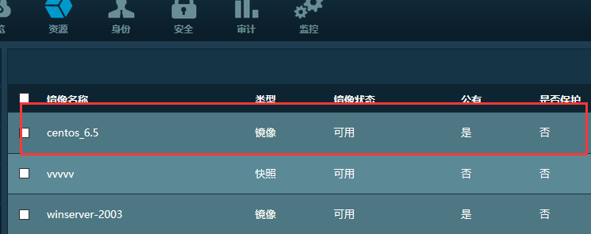
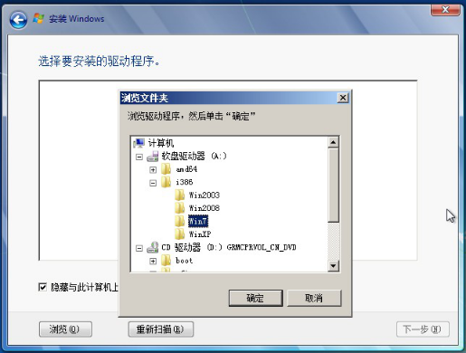
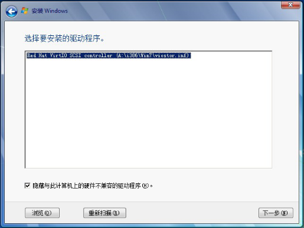
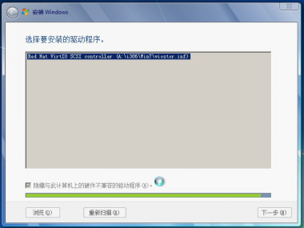
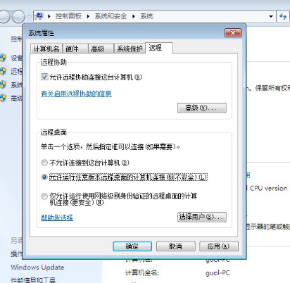
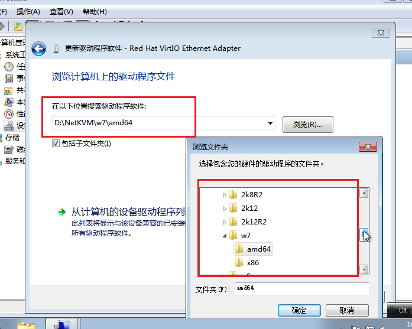
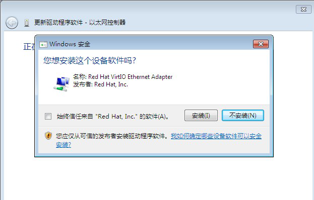

2. OpenStack镜像制作¶
目录
2.1. Ubuntu镜像¶
2.1.1. 创建img文件¶
#假如kvm-img命令提示找不到，可以使用qemu-img命令
kvm-img create -f raw ubuntu.img 10G
2.1.2. 启动安装¶
kvm -m 512 -cdrom ubuntu-12.04-server-amd64.iso -drive file=ubuntu.img -boot d -nographic -vnc :0
Tip
- 注意，这条命令可能会报错，提示地址正在使用，那么在-vnc选项后，依次使用1,2,3……，直到有一个正确的端口。
- 启动安装成功后，根据上面成功的端口地址，使用vncviewer连接(连接地址为ip:port或者ip:port+5900)。然后在进行安装。
- 另外ubuntu 安装成功后，按下continue会重新安装虚拟机，可以使用kill命令杀死该进程，然后执行后面提到的虚拟机重启命令即可

图：ubuntu完成安装
2.1.3. 安装完成重新启动虚拟机¶
kvm -m 512 -drive file=ubuntu.img -boot c -nographic -vnc :0
2.1.4. 镜像格式转换¶
qemu-img convert -f raw -O qcow2 ./ubuntu.img ./ubuntu.qcow2
Tip
在V2.5版本中，由于使用ceph作为后端存储，不支持qcow2格式，格式转换这一步可以省略。
2.1.5. 上传镜像¶
# v2.3版本
glance image-create --name="ubuntu" --is-public=true --container-format=ovf --disk-format=qcow2 < ubuntu.qcow2
# v2.5版本
glance image-create --name="ubuntu-14.04" --is-public=true --container-format=ovf --disk-format=raw<ubuntu.img
Tip
特别注意：上传镜像之前在安装ceph时一定要执行cinder和glance用户的授权和认证。
2.2. cirros镜像¶
使用以下命令创建并上传cirros镜像:
glance image-create --name cirros-x86_64 --is-public True --disk-format raw --container-format ovf --file cirros-0.3.1-x86_64-disk.img
Error
使用以下命令，总是提示no bootable device错误，如下图所示，暂时不知道问题出在哪里。
qemu-img create -f raw cirros.img 5G
kvm -m 512 -cdrom cirros-0.3.1-x86_64-disk.img -drive file=cirros.img -boot d -nographic -vnc :0
kvm -m 512 -drive file=cirros.img -boot c -nographic -vnc :0
Tip
更新：cirros镜像是直接可启动的操作系统文件，而不是安装文件，不需要安装，直接上传即可, 所以安装时提示该错误！

图：cirros镜像无法启动
2.3. centos6.5镜像¶
Centos镜像的制作过程与ubuntu相同，下面直接贴出操作命令：
qemu-img create -f raw centos-1.img 10G
kvm -m 512 -cdrom CentOS-6.5-x86_64-bin-DVD1.iso -drive file=centos-1.img -boot d -nographic -vnc :2
# 和ubuntu安装一样，centos安装完成在vncviewer里点击重启后，会再次启动安装；这时只需要使用ps + kill命令杀死安装进程即可；
# 然后重启虚拟机
kvm -m 512 -drive file=centos-1.img -boot c -nographic -vnc :2
# 转换镜像格式并上传
qemu-img convert -f raw -O qcow2 ./centos-1.img ./centos-1.qcow2
source /root/openstackrc
glance image-create --name="centos_6.5" --is-public=true --container-format=ovf --disk-format=qcow2 < centos-1.qcow2

图：centos镜像成功上传.
Tip
和ubuntu虚拟机不同，ubuntu启动后可以通过dhcp自动联网，但是centos(6.5版本)虚拟机需要经过一番配置才可以联网 。详情请参考 centos虚拟机联网配置 。
2.4. centos7镜像¶
Tip
centos7镜像安装时没有太多区别，这里只列出安装时两点需要注意的地方。


2.5. win7镜像¶
2.5.1. 准备工作¶
下载win.iso,或者准备win安装iso文件¶
可以从https://www.microsoft.com/en-us/evalcenter/evaluate-windows-server-2012网站下载。
2.5.2. 启动安装¶
kvm -m 1024 -cdrom win7.iso -drive file=win7.qcow2,if=virtio,boot=on -fda virtio-win-1.1.16.vfd -boot d -nographic -vnc :0
Tip
- 启动安装命令成功后，使用vncviewer连接，然后手动加载驱动程序。 手动加载方式为：自定义(高级)——加载驱动程序——浏览——软盘驱动器——i387——win7——下一步；即可。
- 另外需要注意的是：安装32位时，选择i386；安装64位时，选择amd64. 并且网卡驱动也对应上！
- 安装过程中Windows会重启导致不断安装，可以用ps 命令杀死进程，然后使用下面的命令加载网卡驱动方式启动即可。





开启远程桌面：

2.5.3. 安装网卡驱动¶
kvm -m 1024 -cdrom virtio-win-0.1-59.iso -drive file=win7.qcow2,if=virtio,boot=on -net nic,model=virtio -boot d -nographic -net user -usb -usbdevice tablet -vnc :0
Error
update: 2016.08.10
这一步我没有安装成功，问题不知道出在哪来。
Tip
update：2016.08.23
该步骤已经成功完成，网卡驱动程序目录见下图。



图：更新网卡驱动目录

2.5.4. 镜像格式转换¶
同上(ceph 作为后端存储的不用转换镜像格式)。
2.5.5. 上传镜像¶
同上
2.5.6. 汇总¶
qemu-img create -f raw win7.raw 10G
kvm -m 1024 -cdrom cn_win7_x64.iso -drive file=win7.raw,if=virtio,boot=on -fda virtio-win-1.7.4_amd64.vfd -boot d -nographic -vnc :0
kvm -m 1024 -cdrom virtio-win-0.1.102.iso -drive file=win7.raw,if=virtio,boot=on -net nic,model=virtio -boot d -nographic -net user -usb -usbdevice tablet -vnc :0
source /root/openstackrc
glance image-create --name="win7" --is-public=true --container-format=ovf --disk-format=raw < win7.raw
2.6. 参考¶
| [1] | http://yansu.org/2013/05/03/create-windows-7-image-for-openstack.html |
| [2] | http://yansu.org/2013/05/15/create-ubuntu-image-for-openstack.html |
| [3] | 《Openstack kvm win7镜像制作》 |
| [4] | 《OpenStack虚拟机镜像制作指南》,官方文档 |
| [5] | http://docwiki.cisco.com/w/index.php?title=OpenStack:_Storing_Images_In_Glance&oldid=56483 |
| [6] | http://www.aboutyun.com/thread-17125-1-1.html |
| [7] | http://www.updays.cn/archives/140 |